Todo el negocio de un vistazo
Ventas del mes, siguiente número de factura, accesos rápidos y el semáforo del SRI siempre visible.
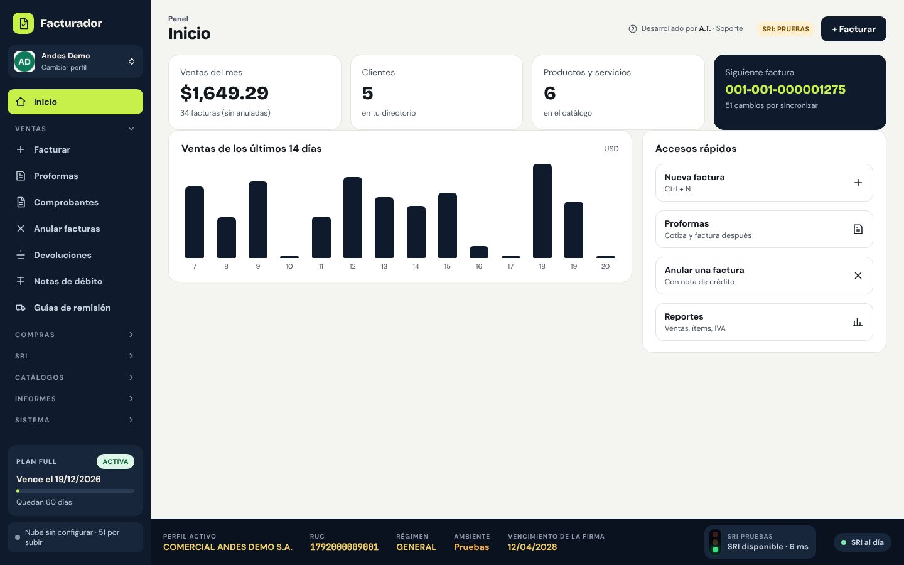
Facturar en segundos
Tus productos más vendidos aparecen en una barra deslizable: un toque y entran a la factura. Las líneas se ven limpias y se editan con solo tocarlas; los datos de pago quedan plegados hasta que los necesites.
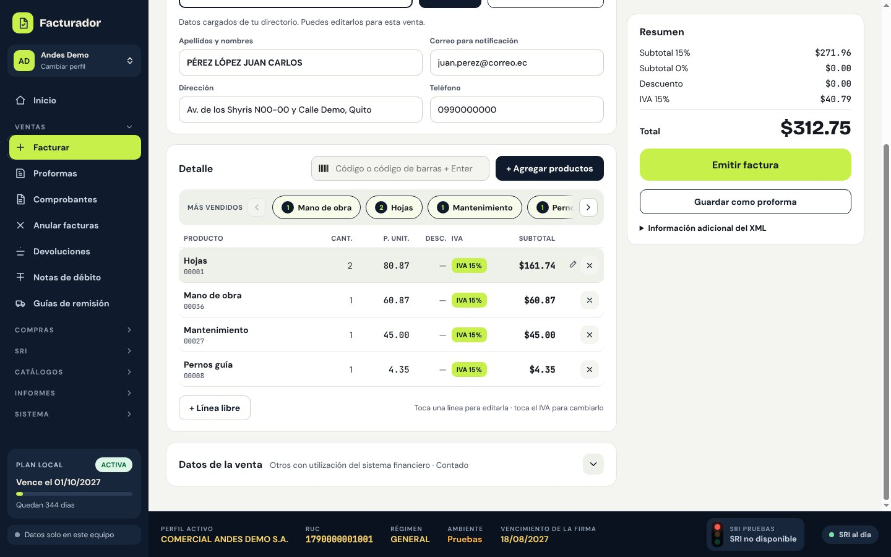
Varios productos de una vez
Con F2 se abre una ventana para buscar por código o nombre, elegir varios productos, ajustar cantidad, precio e IVA y pasarlos todos juntos a la factura.
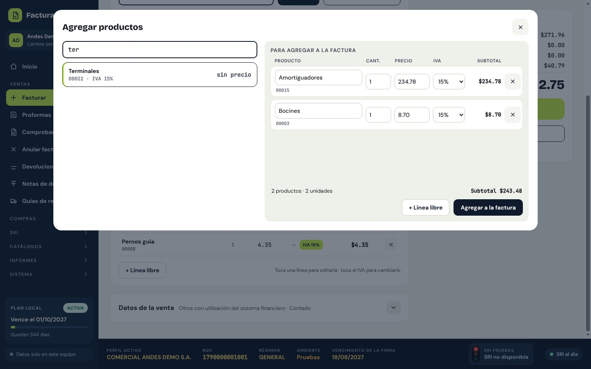
Autorizada y lista para entregar
Al emitir se firma con XAdES-BES, se valida contra el esquema oficial, se envía al SRI y aparece la vista previa del RIDE para imprimir, guardar o enviar por correo.
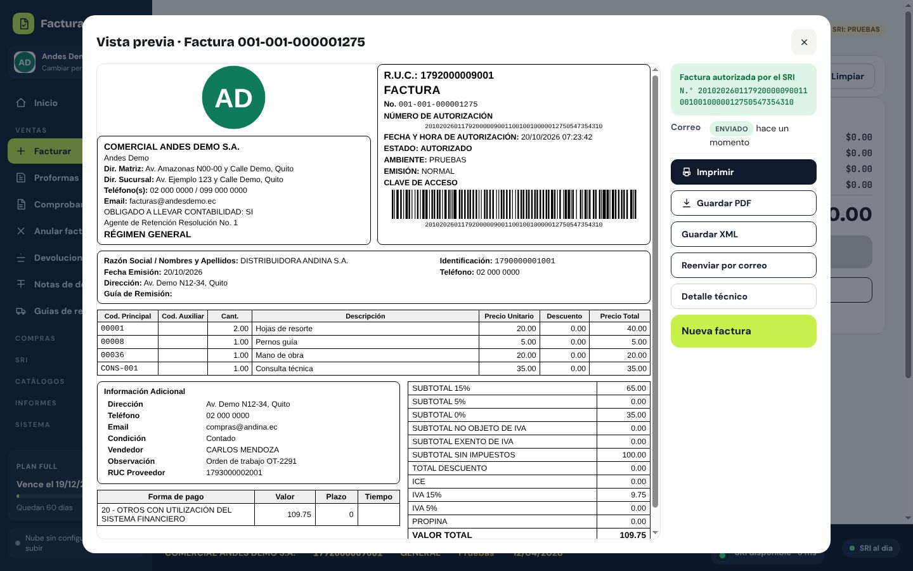
Clientes que se llenan solos
Al escribir un RUC o una cédula, el programa consulta el catastro público del SRI y completa nombre y dirección.
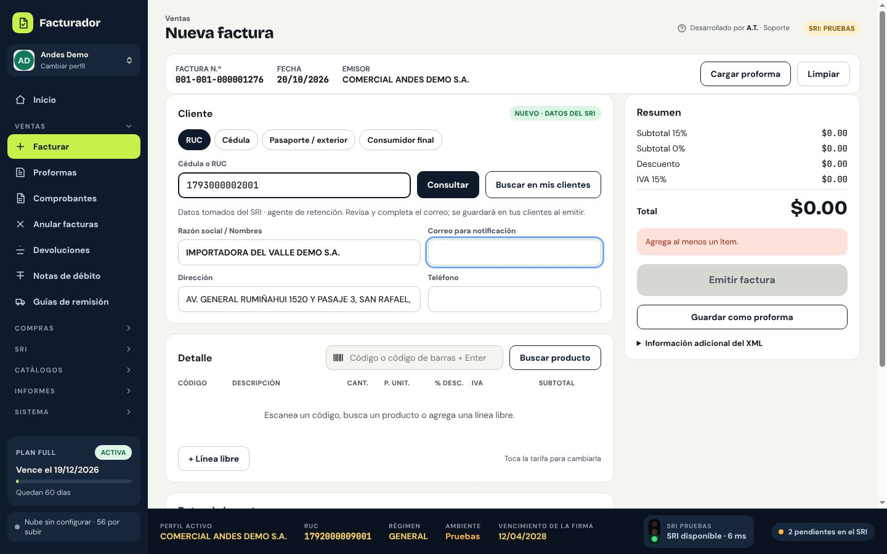
Anulaciones y devoluciones
Anula una factura con su nota de crédito automática o registra devoluciones parciales con control de saldo.
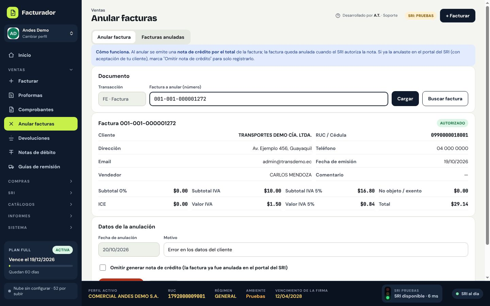
Guías de remisión
Desde una factura o a mano, con transportistas guardados.
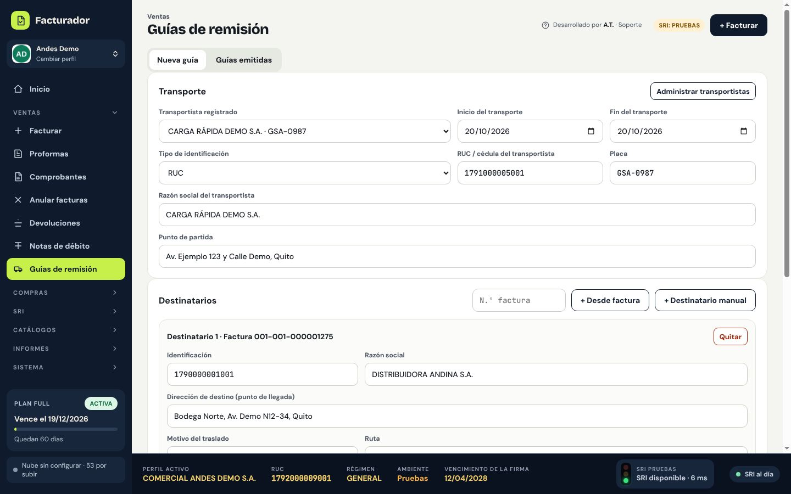
Retenciones 2.0
Comprobantes de retención con sustento tributario y tabla de códigos editable.
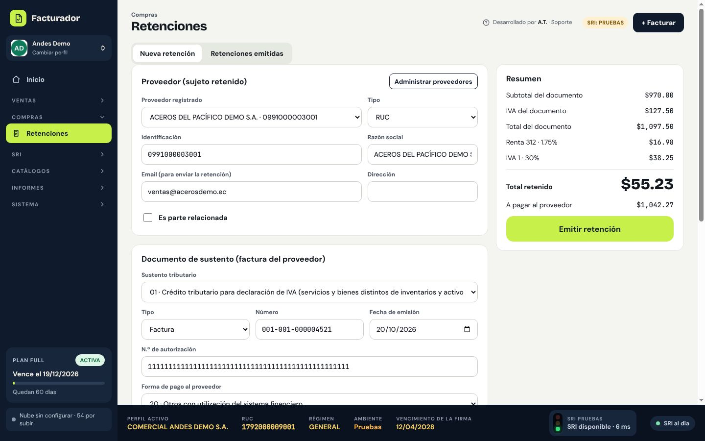
Aunque el SRI se caiga
Si no hay conexión, sigues facturando: los pendientes se autorizan solos en segundo plano y te avisa con una notificación.
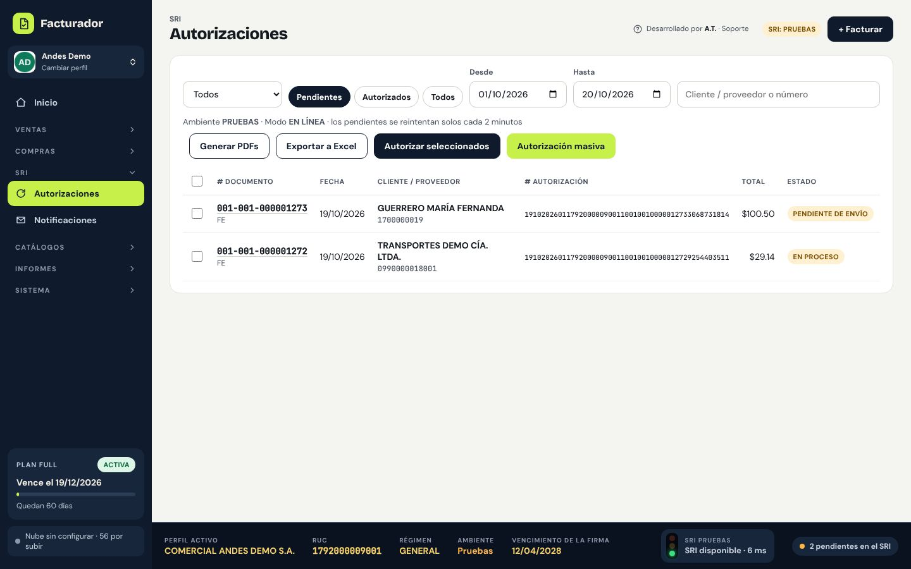
Reportes listos para el contador
Ventas por documento, cliente o vendedor, movimientos de ítems, notas, retenciones y resumen de IVA, en PDF o Excel.
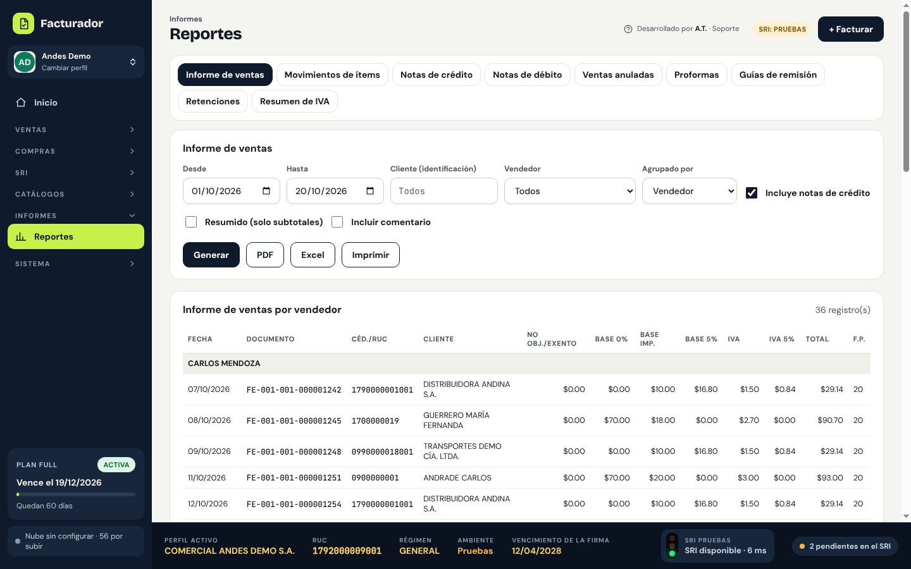
Paso a producción guiado
Una lista de verificación impide facturar en producción sin la firma correcta, los datos completos y una prueba autorizada.
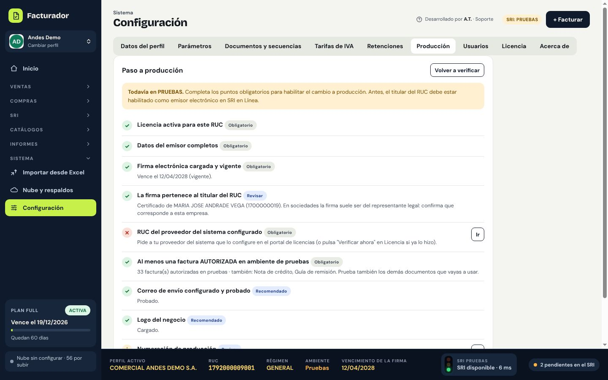
Usuarios y permisos
Administrador, supervisor, vendedor, cajero o contador: cada uno ve solo lo que le corresponde.
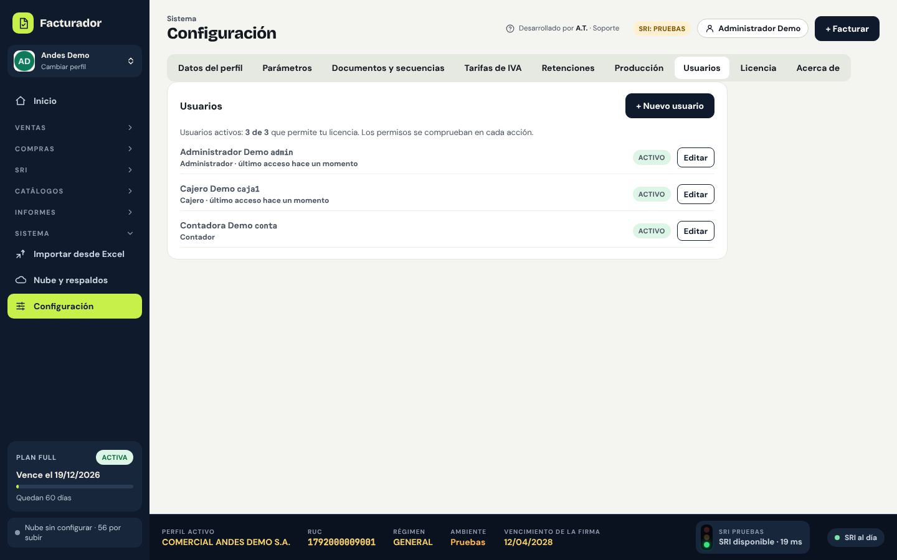
Respaldo diario automático
Cada día se guarda una copia de cada empresa y se restaura con un clic.
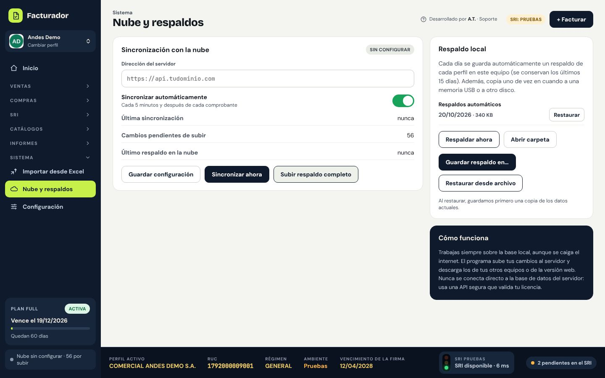